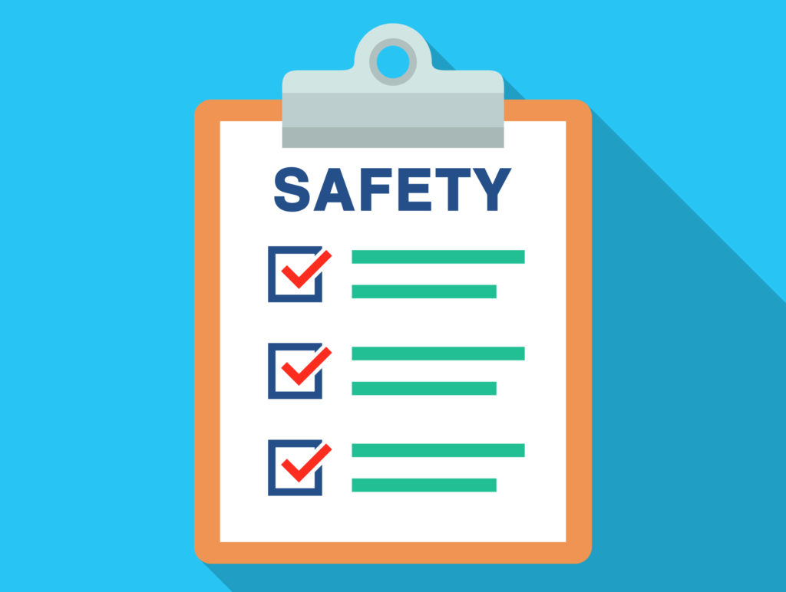

Personal Safety
We all deserve safe, healthy relationships.A safety plan is a personalized, practical plan to improve your safety while experiencing abuse, preparing to leave an abusive situation, or after you leave. This plan includes vital information tailored to your unique situation and will help you prepare for and respond to different scenarios, including telling your friends and family about your situation, coping with emotions, and various resources suited to your individual circumstances. Some of the preparations for a safety plan might seem obviously, but it can be hard to think clearly or make logical decisions during moments of crisis. Having a safety plan laid out in advance can help you protect yourself and others in high-stress situations.
Create a Safety Plan
- What Is A Safety Plan?
- Build Your Path To Safety
- Safety at Home
- Safety at School
A safety plan is a set of actions that can help lower your risk of being hurt by your partner. It includes information specific to you and your life that will increase your safety at school, home, and other places that you go on a daily basis.
Safety planning is a set of actions that can help lower your risk of being hurt by your partner. It includes information specific to you and your life that will increase your safety at school, home, and other places that you go on a daily basis.
Home is an important sanctuary for anyone, whether you’re in a relationship, single, or not even looking. It’s a space to make your own where you feel free to express yourself, comfortable decompressing, and most of all, safe and in control.
While you’re likely going to school for a formal education, it’s no secret that a lot more happens there than just classroom learning. Being at school provides you with an opportunity to engage with others with greater independence than you may have at home and a chance to explore new relationships and interests.
Communication
In relationships, communication allows to you explain to someone else what you are experiencing and what your needs are. The act of communicating not only helps to meet your needs, but it also helps you to be connected in your relationship.What happens to couples who say they struggle with communication is – life. Life is stressful and challenging.These stumbling blocks and the stress that comes with them will begin to erode your good communication skills. Among the top 10 effective communication techniques for couples are listening, fighting fair, getting the facts, caring, honesty, respecting, observing, obtaining third party interventions and active participation.
 Learn More...
Learn More...
Romance
Romantic love is based upon mutual attraction and affection between two people that connect them as a couple. Romantic love is the main foundation of appeal between two people. Love is the main element in any intimate relationship as it represents the foundation on which the entire relationship is built. Romantic love is an intense adulation of a love relationship, in which an emotional connection between two people overrides all external and material considerations. It is common that the emotions and feelings of romantic love are closely linked with sexual attraction, romantic feelings can exist without the presence of any kind of sexual consummation.
 Learn More...
Learn More...
Happiness
Both individuals most be committed to their own personal happiness. Happiness within a relationship is hard to define.... For some, happiness involves a tremendous amount of fun, great intimacy or lots of laughter. Whatever your definition, it directly correlates to your expectations, desires, wants and needs—and those things can change over time. Happy couples are more present with each other and make an effort to listen and take each other's needs seriously. They make an effort to validate each other—communicating that a partner's perspective is understandable and valid, given their personal history or current circumstances.
 Learn More...
Learn More...